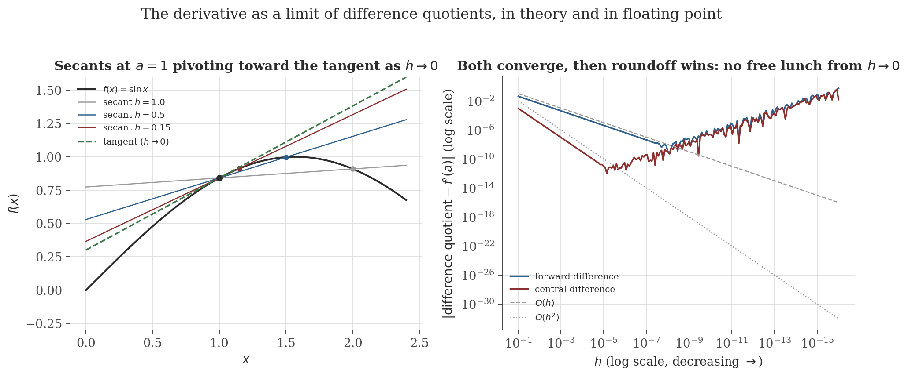
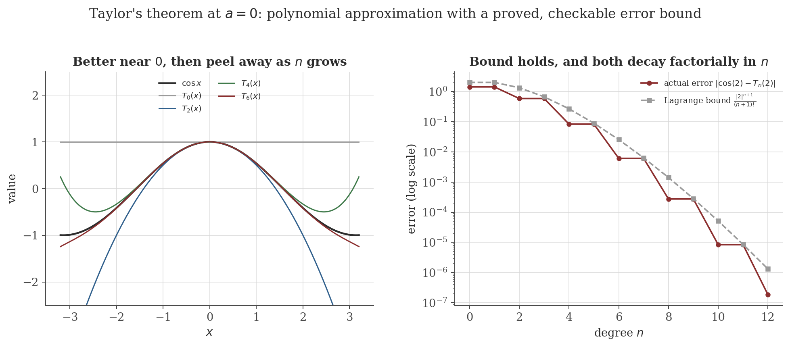

Differentiation
Disclaimer: These are my personal notes compiled for my own reference and learning. They may contain errors, incomplete information, or personal interpretations. While I strive for accuracy, these notes are not peer-reviewed and should not be considered authoritative sources. Please consult official textbooks, research papers, or other reliable sources for academic or professional purposes.
Contents
- Differentiability at a point
- Differentiability implies continuity
- Linearity, the product rule, the quotient rule
- The chain rule
- Derivatives of the elementary functions
- Local extrema and Fermat's theorem
- Rolle's theorem and the Mean Value Theorem
- Monotonicity and L'Hôpital's rule
- Taylor's theorem with Lagrange remainder
- Implicit differentiation
- Computation
- Common pitfalls
- Connections
- References
1. Differentiability at a point
$f$ is differentiable at $a$ if $\displaystyle f'(a)=\lim_{h\to0}\frac{f(a+h)-f(a)}{h}$ exists (as a finite number). Equivalently, writing $x=a+h$: $f'(a)=\lim_{x\to a}\frac{f(x)-f(a)}{x-a}$.
Geometrically, $\frac{f(a+h)-f(a)}{h}$ is the slope of the secant line through $(a,f(a))$ and $(a+h,f(a+h))$; the definition says the derivative is whatever these secant slopes converge to as the second point slides into the first. One-sided derivatives $f'_-(a)$, $f'_+(a)$ are defined the same way with $h\to0^-$, $h\to0^+$; $f$ is differentiable at $a$ iff both one-sided derivatives exist and agree. At an endpoint of the domain, only the relevant one-sided limit is required.

2. Differentiability implies continuity
If $f$ is differentiable at $a$, then $f$ is continuous at $a$.
The continuity note's pitfall section already recorded the converse's failure at the level of a single corner ($f(x)=|x|$, continuous but not differentiable at $0$). The next example is sharper: differentiability at every point does not force the derivative itself to be continuous — differentiability is strictly weaker than being continuously differentiable ($C^1$).
Let $g(x)=x^2\sin(1/x)$ for $x\neq0$, $g(0)=0$. At $0$: $\frac{g(h)-g(0)}{h}=h\sin(1/h)$, and $|h\sin(1/h)|\leq|h|\to0$, so $g'(0)=0$ exists by the squeeze theorem. Away from $0$, the product and chain rules give $g'(x)=2x\sin(1/x)-\cos(1/x)$. But $\lim_{x\to0}g'(x)$ does not exist: the $2x\sin(1/x)$ term $\to0$ (squeeze, as above), while $\cos(1/x)$ oscillates between $-1$ and $1$ without settling as $x\to0$ (take $x_n=1/(2n\pi)\to0$, giving $\cos(1/x_n)=1$, versus $x_n'=1/((2n+1)\pi)\to0$, giving $\cos(1/x_n')=-1$ — the same sequential argument used for essential discontinuities in the continuity note, Section 4). So $g$ is differentiable everywhere, yet $g'$ is discontinuous at $0$.
3. Linearity, the product rule, the quotient rule
Throughout, $f,g$ are differentiable at $a$.
Linearity. $(f+g)'(a)=f'(a)+g'(a)$ and $(cf)'(a)=cf'(a)$ follow immediately from the corresponding limit laws applied to the difference quotient $\frac{(f+g)(a+h)-(f+g)(a)}{h}=\frac{f(a+h)-f(a)}{h}+\frac{g(a+h)-g(a)}{h}$.
$(fg)'(a)=f'(a)g(a)+f(a)g'(a)$.
If $g(a)\neq0$: $\left(\dfrac1g\right)'(a)=-\dfrac{g'(a)}{g(a)^2}$, and hence $\left(\dfrac{f}{g}\right)'(a)=\dfrac{f'(a)g(a)-f(a)g'(a)}{g(a)^2}$.
4. The chain rule
If $g$ is differentiable at $a$ and $f$ is differentiable at $g(a)$, then $f\circ g$ is differentiable at $a$ and $(f\circ g)'(a)=f'(g(a))\cdot g'(a)$.
The tempting one-line argument writes $\dfrac{f(g(a+h))-f(g(a))}{h}=\dfrac{f(g(a+h))-f(g(a))}{g(a+h)-g(a)}\cdot\dfrac{g(a+h)-g(a)}{h}$ and lets $h\to0$, reading off $f'(g(a))\cdot g'(a)$. This is not a valid proof: the first factor is undefined whenever $g(a+h)=g(a)$, and if $g$ oscillates around the value $g(a)$ infinitely often as $h\to0$ (which a differentiable $g$ can do — e.g. $g(x)=x^2\sin(1/x)$ from Section 2, near many points where it revisits a given value), the factor is undefined for a sequence of $h\to0$, and the "proof" never gets off the ground.
This is the standard Carathéodory device: replacing the difference quotient by a function $\varphi$ that is manifestly defined at the troublesome point, with differentiability of $f$ repackaged as continuity of $\varphi$. It costs one extra definition and buys a proof with no case split on whether $g(x)=g(a)$.
5. Derivatives of the elementary functions
Power rule, integer case. $\frac{d}{dx}[x^n]=nx^{n-1}$ for $n\in\mathbb{N}$: true for $n=1$ ($\lim_{h\to0}\frac{(x+h)-x}{h}=1$), and if it holds for $n$, the product rule gives $\frac{d}{dx}[x^{n+1}]=\frac{d}{dx}[x\cdot x^n]=1\cdot x^n+x\cdot nx^{n-1}=(n+1)x^n$ — induction closes the case. For negative integers, apply the reciprocal rule to $x^{-n}=1/x^n$; for rational and then general real exponents, write $x^r=e^{r\ln x}$ and apply the chain rule together with the exponential and logarithm derivatives below (logarithmic differentiation), giving the same formula $rx^{r-1}$ for all real $r$ on $x>0$.
Exponential and logarithm. Taking $\lim_{h\to0}\frac{e^h-1}{h}=1$ as the defining normalization of $e$ (proved via the power series for $e^x$ or via monotone bounding sequences in a foundational analysis treatment, not re-derived here): $\frac{e^{x+h}-e^x}{h}=e^x\cdot\frac{e^h-1}{h}\to e^x$, so $\frac{d}{dx}[e^x]=e^x$. Since $\ln$ is the inverse of $\exp$, differentiating $e^{\ln x}=x$ with the chain rule gives $e^{\ln x}\cdot\frac{d}{dx}[\ln x]=1$, so $\frac{d}{dx}[\ln x]=1/e^{\ln x}=1/x$.
Sine and cosine. Using the angle-addition formula and the two standard limits $\lim_{h\to0}\frac{\sin h}{h}=1$, $\lim_{h\to0}\frac{\cos h-1}{h}=0$ (proved geometrically via areas of circular sectors and triangles, not re-derived here): $\frac{\sin(x+h)-\sin x}{h}=\sin x\cdot\frac{\cos h-1}{h}+\cos x\cdot\frac{\sin h}{h}\to\cos x$, giving $\frac{d}{dx}[\sin x]=\cos x$; the analogous computation gives $\frac{d}{dx}[\cos x]=-\sin x$. The remaining trigonometric and inverse trigonometric derivatives follow from these two via the quotient rule ($\tan=\sin/\cos$) and implicit differentiation (Section 10).
6. Local extrema and Fermat's theorem
If $f$ has a local extremum at an interior point $c$ of its domain and $f$ is differentiable at $c$, then $f'(c)=0$.
Two hypotheses are load-bearing and routinely dropped by accident. Interior: $f(x)=x$ on $[0,1]$ attains its maximum at the endpoint $x=1$, where $f'(1)=1\neq0$ — the one-sided argument above only produces one of the two inequalities at an endpoint, not both. Differentiable at $c$: $f(x)=|x|$ has a (global) minimum at $x=0$, where $f$ is not differentiable — a critical point in the sense used for optimization must include points where $f'$ fails to exist, not only zeros of $f'$.
7. Rolle's theorem and the Mean Value Theorem
If $f$ is continuous on $[a,b]$, differentiable on $(a,b)$, and $f(a)=f(b)$, then $f'(c)=0$ for some $c\in(a,b)$.
If $f$ is continuous on $[a,b]$ and differentiable on $(a,b)$, then $f'(c)=\dfrac{f(b)-f(a)}{b-a}$ for some $c\in(a,b)$.
Rolle's theorem is the special case $f(a)=f(b)$ of the MVT (the secant line is horizontal), but it is also the engine of the MVT's own proof — tilting the graph by the secant's slope turns the general statement back into the flat one.
8. Monotonicity and L'Hôpital's rule
If $f$ is continuous on $[a,b]$, differentiable on $(a,b)$, and $f'(x)>0$ for all $x\in(a,b)$, then $f$ is strictly increasing on $[a,b]$.
This is the theorem that licenses the "first derivative test" for optimization: $f'>0$ then $f'<0$ around a critical point identifies a local maximum because the theorem literally says $f$ rises before it and falls after.
If $f,g$ are continuous on $[a,b]$ and differentiable on $(a,b)$ with $g'(x)\neq0$ for all $x\in(a,b)$, then $g(a)\neq g(b)$ and $\dfrac{f(b)-f(a)}{g(b)-g(a)}=\dfrac{f'(c)}{g'(c)}$ for some $c\in(a,b)$.
Taking $g(x)=x$ recovers the ordinary MVT — the Cauchy version is what is actually needed for L'Hôpital, because it relates $f$ and $g$ at the same intermediate point $c$, which the two separate (ordinary) MVTs applied to $f$ and $g$ individually would not guarantee.
Suppose $f(a)=g(a)=0$, $f,g$ are differentiable on an interval around $a$ (except possibly at $a$), $g'(x)\neq0$ near $a$ (except at $a$), and $\lim_{x\to a}\dfrac{f'(x)}{g'(x)}=L$. Then $\lim_{x\to a}\dfrac{f(x)}{g(x)}=L$.
This is exactly the theorem the continuity note (Section 8) deferred here, having warned there that the rule applies only under a genuine $\frac00$ or $\frac{\infty}{\infty}$ hypothesis — visible in the proof above at the step $\frac{f(x)}{g(x)}=\frac{f(x)-f(a)}{g(x)-g(a)}$, which uses $f(a)=g(a)=0$ essentially. The $\infty/\infty$ case is proved by a different (Stolz–Cesàro-flavored) argument and is not reproduced here.
9. Taylor's theorem with Lagrange remainder
If $f$ has $n+1$ continuous derivatives on an interval containing $a$ and $x$, then $f(x)=\displaystyle\sum_{k=0}^{n}\frac{f^{(k)}(a)}{k!}(x-a)^k+R_n(x)$, where $R_n(x)=\dfrac{f^{(n+1)}(c)}{(n+1)!}(x-a)^{n+1}$ for some $c$ strictly between $a$ and $x$.
$n=0$ recovers the MVT exactly ($f(x)=f(a)+f'(c)(x-a)$): Taylor's theorem is the MVT's higher-order generalization, replacing a single linear approximation with a degree-$n$ polynomial and a remainder controlled the same way, via an auxiliary function and Rolle's theorem.

Let $f(x)=e^{-1/x^2}$ for $x\neq0$, $f(0)=0$. One can show (by induction, using that every derivative is $e^{-1/x^2}$ times a rational function of $x$, and that $e^{-1/x^2}$ dominates any power of $1/x$ as $x\to0$) that $f^{(k)}(0)=0$ for every $k\geq0$. The Maclaurin series is therefore identically $0$, which converges everywhere — to the constant $0$, not to $f(x)$, for any $x\neq0$ where $f(x)>0$. Taylor's theorem does not fail here; rather, the remainder $R_n(x)$ simply does not tend to $0$ as $n\to\infty$ for this $f$, so the (convergent) series and the function part ways. This is the reason the sequences and series note's treatment of radius of convergence (its Section 8) is a statement about where a power series converges, which is a separate question from whether a given function's Taylor series converges back to that function.
10. Implicit differentiation
When $y$ is defined implicitly near $(a,b)$ by $F(x,y)=0$ (with $F(a,b)=0$), treating $y=y(x)$ and differentiating both sides with the chain rule gives $F_x(x,y)+F_y(x,y)\cdot y'(x)=0$, so $y'(x)=-\dfrac{F_x(x,y)}{F_y(x,y)}$ wherever $F_y\neq0$. Example: for $x^2+y^2=1$, $F_x=2x$, $F_y=2y$, giving $\frac{dy}{dx}=-x/y$ away from $y=0$. This computation is informal as stated — it presupposes that a differentiable function $y(x)$ solving $F(x,y)=0$ exists near $(a,b)$ in the first place, which is exactly the content of the Implicit Function Theorem; the rigorous multivariable statement, including why $F_y(a,b)\neq0$ is the hypothesis that makes it work, belongs to (and is deferred to) the multivariable calculus note.
11. Computation
The figures above are generated by differentiation/generate_figures.py. The snippet below reproduces the finite-difference convergence data (forward $O(h)$, central $O(h^2)$, then roundoff) and the Lagrange remainder check numerically.
import numpy as np, math
f = np.sin
a = 1.0
true = math.cos(a)
print("Finite-difference convergence to f'(1) = cos(1):")
for h in [1e-1, 1e-3, 1e-5, 1e-7, 1e-9, 1e-11, 1e-13]:
fwd = (f(a+h) - f(a)) / h
ctr = (f(a+h) - f(a-h)) / (2*h)
print(f"h={h:8.0e} forward err={abs(fwd-true):.3e} central err={abs(ctr-true):.3e}")
def taylor_poly(x, n):
total = 0.0
for k in range(0, n+1, 2):
sign = 1 if (k//2) % 2 == 0 else -1
total += sign * x**k / math.factorial(k)
return total
x0 = 2.0
print("\nTaylor remainder check for cos(x) at a=0, x=2:")
for n in [2, 4, 6, 8, 10, 12]:
actual = abs(math.cos(x0) - taylor_poly(x0, n))
bound = abs(x0)**(n+1) / math.factorial(n+1)
print(f"n={n:2d} actual={actual:.6e} Lagrange bound={bound:.6e} bound holds: {actual <= bound}")
Actual output:
Finite-difference convergence to f'(1) = cos(1):
h= 1e-01 forward err=4.294e-02 central err=9.001e-04
h= 1e-03 forward err=4.208e-04 central err=9.005e-08
h= 1e-05 forward err=4.207e-06 central err=1.114e-11
h= 1e-07 forward err=4.183e-08 central err=1.943e-10
h= 1e-09 forward err=5.254e-08 central err=2.970e-09
h= 1e-11 forward err=1.169e-06 central err=1.169e-06
h= 1e-13 forward err=7.339e-04 central err=1.788e-04
Taylor remainder check for cos(x) at a=0, x=2:
n= 2 actual=5.838532e-01 Lagrange bound=1.333333e+00 bound holds: True
n= 4 actual=8.281350e-02 Lagrange bound=2.666667e-01 bound holds: True
n= 6 actual=6.075386e-03 Lagrange bound=2.539683e-02 bound holds: True
n= 8 actual=2.738207e-04 Lagrange bound=1.410935e-03 bound holds: True
n=10 actual=8.366275e-06 Lagrange bound=5.130672e-05 bound holds: True
n=12 actual=1.848449e-07 Lagrange bound=1.315557e-06 bound holds: TrueBoth finite-difference errors bottom out and then increase: forward difference around $h\sim10^{-8}$ (matching the theoretical optimum $\sqrt{\varepsilon_{\text{machine}}}\approx1.5\times10^{-8}$, balancing $O(h)$ truncation error against $O(\varepsilon/h)$ roundoff error), central difference bottoming out lower and at a slightly larger $h$ — consistent with its better $O(h^2)$ truncation rate trading against the same roundoff mechanism at a more favorable balance point. The Taylor remainder bound holds at every degree tested and both columns shrink by roughly an order of magnitude every two degrees, exactly the factorial-beats-geometric behavior the proof predicts.
12. Common pitfalls
Demonstrated in Section 2: $g(x)=x^2\sin(1/x)$ (with $g(0)=0$) is differentiable everywhere, including at $0$, but $g'$ is discontinuous at $0$. "The derivative exists" and "the derivative is a continuous function" are different claims; results that assume $f\in C^1$ (e.g. some forms of Taylor's theorem, or swapping derivatives and limits/integrals) genuinely need the stronger one.
Demonstrated in Section 4: the naive proof divides by $g(a+h)-g(a)$, which can be $0$ for a sequence of $h\to0$ even when $g$ is differentiable at $a$. The Carathéodory proof in Section 4 avoids this by never dividing by that quantity.
Let $f(x)=x$ for $x\in[0,1)$ and $f(1)=0$. Then $f'(x)=1$ everywhere on $(0,1)$, but $f$ is not continuous at the endpoint $x=1$. The secant slope is $\frac{f(1)-f(0)}{1-0}=\frac{0-0}{1}=0$, yet no $c\in(0,1)$ has $f'(c)=0$ (it's always $1$) — the conclusion of the MVT genuinely fails, because the closed-interval continuity hypothesis (only satisfied on $(0,1)$ here, not at $x=1$) was violated, not merely because of sloppy bookkeeping.
Demonstrated in Section 9: $f(x)=e^{-1/x^2}$ (with $f(0)=0$) has every derivative $0$ at $x=0$, so its Maclaurin series is identically $0$ — convergent everywhere, but equal to $f$ only at $x=0$. "The Taylor series converges" and "the Taylor series converges to $f$" are different claims, and the gap between them is exactly whether the Lagrange remainder $R_n(x)\to0$.
13. Connections
- Continuity and limits. Differentiability implies continuity (Section 2) but not conversely; the Extreme Value Theorem from that note is exactly what powers the proof of Rolle's theorem (Section 7) here, and this note in turn supplies the Cauchy-MVT proof of L'Hôpital's rule (Section 8) that the continuity note explicitly deferred.
- Sequences and series. The Lagrange remainder formula proved in Section 9 is the tool that note's treatment of radius of convergence relies on when discussing Taylor series specifically (as opposed to power series in general); the $e^{-1/x^2}$ pitfall there is the standard illustration of why "convergent" and "convergent to $f$" must be kept separate.
- Multivariable calculus. Implicit differentiation (Section 10) is made rigorous by the multivariable chain rule and the Implicit Function Theorem there; the second-derivative test for a critical point of a two-variable function is the direct generalization of Fermat's theorem (Section 6) plus a sign condition on the Hessian, the same Hessian that appears via its eigenvalues in the eigenvalues note's discussion of that test.
- Optimization (machine learning). Fermat's theorem (Section 6) is the reason gradient-based optimization searches for points where the derivative (gradient) vanishes; the monotonicity theorem (Section 8) is the one-dimensional case of the descent lemma that note's Section 3 proves in full generality, the engine behind the gradient descent convergence guarantees in its Sections 4–5.
14. References
- Rudin, W. (1976). Principles of Mathematical Analysis (3rd ed.). McGraw-Hill.
- Apostol, T. M. (1967). Calculus, Volume 1 (2nd ed.). Wiley.
- Spivak, M. (2008). Calculus (4th ed.). Publish or Perish.
- Abbott, S. (2015). Understanding Analysis (2nd ed.). Springer.